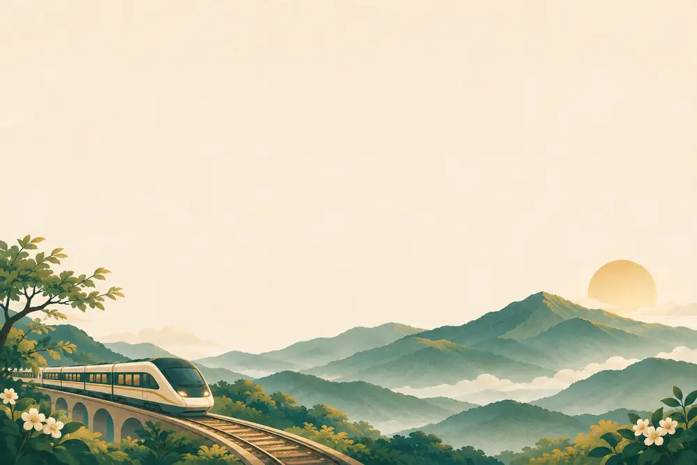

第2梯次
金賓汽車員工旅遊・福森號
福森號鐵道之旅
森林癒上山・森品茗下山
2027.01.03（日）— 01.04（一）

原表註明元件尚未預定，高鐵依實際訂票確認。第二天早餐與晨間活動有重疊，阿里山至奮起湖接駁及上車用餐時間待旅行社確認。
第一天・優遊吧斯與森林癒
桃園 → 嘉義 → 優遊吧斯 → 十字路 → 阿里山
06:00–06:15
公司集合出發
集合地點為金賓汽車頂湖廠，前往桃園高鐵站。
07:34–08:54
高鐵・桃園 → 嘉義
建議時段，車次與座位以實際票券為準。
09:00 起
嘉義遊覽專車接駁
前往鄒族文化部落。
11:00–13:00
YUYUPAS 優遊吧斯
11:00–11:30 自由活動，11:30–12:00 歌舞秀，12:10–13:00 鄒族風味餐。
14:00–17:45
福森號「森林癒」
十字路 → 二萬坪 → 祝山 → 阿里山。
18:10–19:30
阿里山賓館入住
Check-in，辦理入住並稍作休息。
19:30–21:00
晚餐
飯店 Buffet。
住宿・阿里山賓館
早・摩斯漢堡（贈送） 午・原民風味餐 晚・飯店 Buffet
第二天・晨間活動與森品茗
阿里山 → 奮起湖 → 北門 → 嘉義
04:30–07:00
自選・祝山觀日出
小火車時刻、日出及參加安排依當日確認。
07:30–09:00
飯店早餐
與 08:30 晨間活動有重疊，參加及集合安排請等領隊確認。
08:30–10:30
自選・飯店設施或神木路線
依體力、天候與領隊安排參加。
11:40（參考）
午餐・奮起湖便當
原表列於車上享用，接駁與上車用餐時間待確認。
12:20–16:25
福森號「森品茗」
奮起湖 → 水社寮 → 交力坪 → 竹崎 → 北門。
17:19–18:25
高鐵・嘉義 → 桃園
建議時段，以實際票券為準，預計 19:30 返回集合地。
早・飯店早餐 午・奮起湖便當 晚・高鐵便當